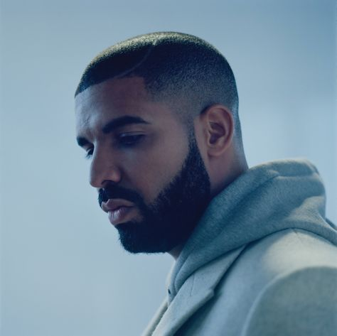
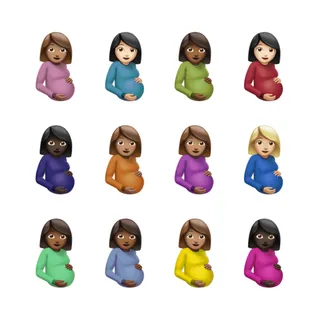
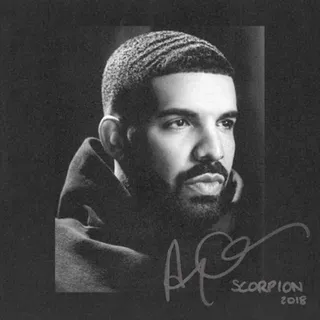

DRAKE
he truth is it’s hard to build a connection with music that’s this closed off. Drake’s music has become increasingly impersonalized, like he’s slotting into a rotating shift of roles. Up to IYRTITL there was a sense that you could create some sort of sketch of his life in your head, but now the details are too purposefully vague and cloudy. This isn’t some plea for bars about fatherhood over house beats, but the details and imperfections of his lyrics once made him feel like a real person instead of just a moodboard. It’s as if the goal of Honestly, Nevermind is anonymity—inoffensively, sort of fun music that simmers in the background all summer and beyond. That’s the opposite of what the appeal of Drake’s music has been for nearly 15 years, where it was like he wholeheartedly believed the world revolved around his trust issues and breakups. Unfortunately, Drake is the rare pop star who sounds better when he doesn’t think about anyone but himself.
  